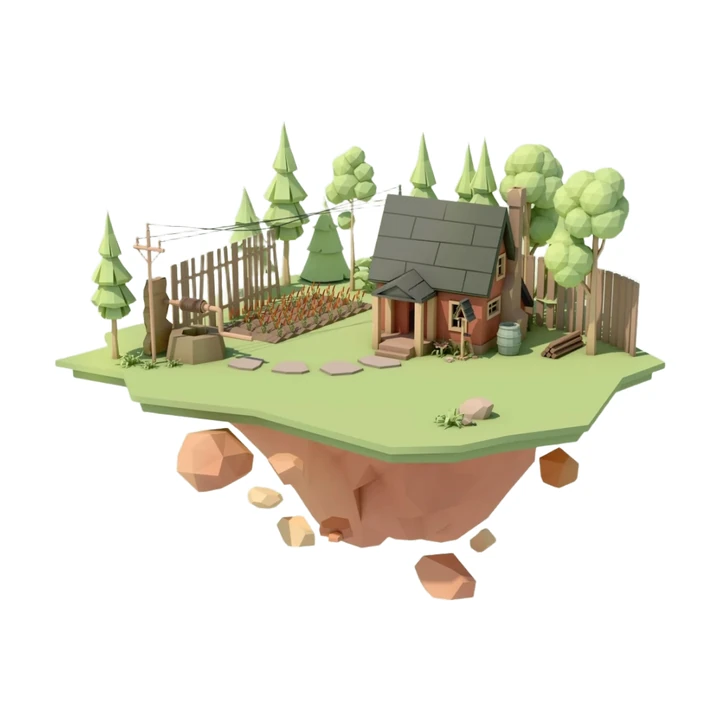
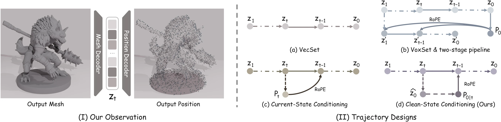
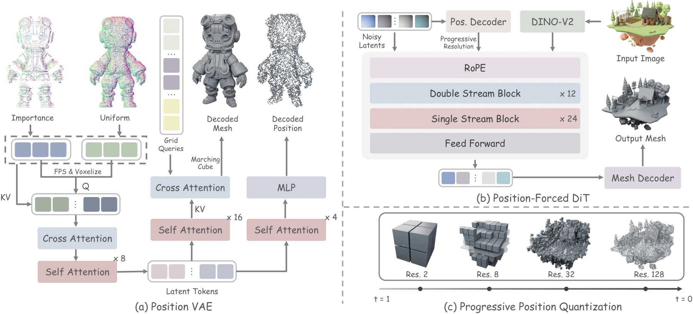
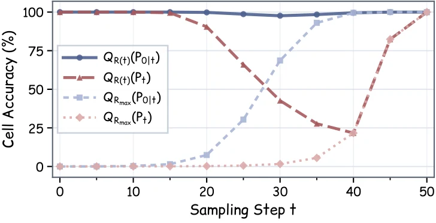

Recent single-stage 3D generative models commonly adopt VecSet representations, encoding 3D shapes as unordered sets of latent tokens. However, compared with two-stage methods that provide explicit positional guidance, these models must implicitly infer token positions throughout denoising, limiting their generation quality. We observe that, despite the absence of explicit positional conditioning, VecSet tokens retain recoverable spatial correspondences. Building on this observation, we propose Position Forcing, a position-based self-conditioning framework. During denoising, Position Forcing recovers token positions from the current clean latent estimate, quantizes them at progressively finer resolutions according to the denoising stage, and feeds the resulting positional encodings back into the diffusion Transformer. This progressively refined positional feedback provides spatial guidance at a granularity appropriate to each denoising stage, guiding shape generation along a coarse-to-fine trajectory and substantially improving generation quality without a separate position generation stage. Experiments demonstrate that Position Forcing achieves strong performance among single-stage 3D generative methods and outperforms several competitive multi-stage approaches.
One 50-step sampling trajectory on a real case. Press play and watch the spatial guidance sharpen from a single cell to full resolution.

Every mesh below is the real generated .glb, shaded by surface normal so the geometry reads without texture hiding it. Page through all 48 results — the conditioning image is inset in each corner.
Loading cases…
In a VecSet VAE with point queries, every latent token is built from a spatial query — and that correspondence survives encoding.


A VoxSet VAE augmented with a 4-layer Transformer position decoder $D_{\mathrm{pos}}$, trained in two stages:
A FLUX-style rectified-flow Transformer (12 double-stream + 24 single-stream blocks, width 1536) with DINOv2-Giant image conditioning and 3D RoPE carrying the positional guidance.
Why the clean state? Position predictions from the noisy latent $\mathbf{Z}_t$ are unreliable at high noise, and full-resolution encodings then lock the model onto wrong fine-grained relationships. Position Forcing instead inverts the flow path to a clean estimate first:
$$\widehat{\mathbf{Z}}_0=\mathbf{Z}_t-t\widehat{\mathbf{V}}_t,\qquad P_{0\mid t}=D_{\mathrm{pos}}(\widehat{\mathbf{Z}}_0)$$Why quantize? Coarse cells at high noise keep the global layout while staying insensitive to positional error; the grid then refines toward local geometry.
Training vs. inference. Reproducing the feedback during training would require unrolling the trajectory, so training keeps single-timestep sampling and conditions on ground-truth query positions under the same schedule $R(t)$, plus random $\{-1,0,1\}$ cell perturbations for robustness:
$$\mathcal{L}_{\mathrm{FM}}=\mathbb{E}\!\left[\left\|v_\theta\!\left(\mathbf{Z}_t,t,\mathbf{c}_I,\operatorname{PE}\!\left(Q_{R(t)}(\mathcal{P})+\boldsymbol{\delta}\right)\right)-(\boldsymbol{\epsilon}-\mathbf{Z}_0)\right\|_F^2\right]$$Position Forcing reaches the best or tied-best score on all four metrics — ahead of both single-stage and multi-stage baselines.
| Model | Single stage | ULIP-T ↑ | ULIP-I ↑ | Uni3D-T ↑ | Uni3D-I ↑ |
|---|---|---|---|---|---|
| TRELLIS | ✗ | 0.076 | 0.126 | 0.249 | 0.311 |
| TRELLIS 2 | ✗ | 0.077 | 0.124 | 0.245 | 0.317 |
| Direct3D-S2 | ✗ | 0.074 | 0.122 | 0.247 | 0.314 |
| Hi3DGen | ✗ | 0.065 | 0.113 | 0.252 | 0.301 |
| CraftsMan 1.5 | ✓ | 0.074 | 0.129 | 0.237 | 0.298 |
| UniLat3D | ✓ | 0.071 | 0.119 | 0.252 | 0.307 |
| Hunyuan3D 2.1 | ✓ | 0.075 | 0.125 | 0.250 | 0.320 |
| Position Forcing (Ours) | ✓ | 0.077 | 0.130 | 0.257 | 0.321 |
| Method | Latent size | CD ↓ | F1 ↑ |
|---|---|---|---|
| TripoSG | 64 × 4096 | 17.96 | 92.33 |
| 64 × 8192 | 16.61 | 94.19 | |
| Hunyuan3D-2.1 | 64 × 4096 | 9.08 | 89.43 |
| 64 × 8192 | 8.28 | 90.99 | |
| 64 × 20480 | 7.62 | 92.06 | |
| Position Forcing | 64 × 4096 | 8.28 | 90.74 |
| 64 × 8192 | 6.37 | 93.83 | |
| 64 × 20480 | 5.39 | 95.38 |
Accuracy (%) = fraction of predicted positions falling in the same cell as their query position on a $128^3$ grid.
| Training strategy | 0% | 10% | 20% | 30% |
|---|---|---|---|---|
| Frozen VAE | 67.4 | 51.3 | 23.0 | 6.7 |
| Joint finetuning | 99.9 | 99.7 | 92.5 | 67.3 |

For qualitative results, see the interactive meshes above — every case is the real generated asset, rotatable from any angle rather than a fixed render.
Same input, seed and sampling settings throughout. (a) is the VecSet baseline with no positional conditioning; (f) is the full model.
| Configuration | (a) | (b) | (c) | (d) | (e) | (f) Ours | (g) |
|---|---|---|---|---|---|---|---|
| Train pos. | — | Pred | Pred | Pred | Query | Query | Query |
| Infer pos. | — | Pred | Pred | $x_0$ | Pred | $x_0$ | $x_0$ |
| Progressive quant. | ✗ | ✗ | ✓ | ✓ | ✓ | ✓ | ✓ |
| Resolution | — | 128 | Prog. | Prog. | Prog. | Prog. | Prog. |
| VAE | VecSet | Joint | Joint | Joint | Joint | Joint | Stage-I |
| ULIP-T ↑ | 0.075 | 0.076 | 0.074 | 0.075 | 0.058 | 0.077 | 0.076 |
| ULIP-I ↑ | 0.125 | 0.127 | 0.124 | 0.126 | 0.095 | 0.130 | 0.128 |
| Uni3D-T ↑ | 0.250 | 0.247 | 0.256 | 0.257 | 0.225 | 0.257 | 0.248 |
| Uni3D-I ↑ | 0.320 | 0.305 | 0.321 | 0.323 | 0.265 | 0.321 | 0.308 |
Query / Pred / $x_0$ = ground-truth query positions, predicted positions, and positions recovered from the predicted clean latent. Bold = best, underline = second best.
Training conditions on ground-truth query positions; inference recovers them from the predicted clean latent and re-quantizes each step.
# Training: use query positions from the frozen encoder
def training_loss(point_cloud, image):
with no_grad():
z0, query_pos = vae.encode(point_cloud)
image_cond = image_encoder(image)
t, noise = sample_time_and_noise(z0)
zt = (1 - t) * z0 + t * noise
# Quantize query positions at the current resolution
pos = quantize(query_pos, R(t))
v = dit(zt, t, image_cond, rope_idx=pos)
return mse(v, noise - z0)
# Inference: recover positions from predicted clean latents
@no_grad()
def sample(noise, image, times):
z = noise
image_cond = image_encoder(image)
# Initially R = 1: all tokens share the same coordinates
pos = zeros_like_positions(z)
for t, t_next in consecutive_pairs(times):
# Predict velocity using current position
v = dit_cfg(z, t, image_cond, rope_idx=pos)
# Predict clean latents and recover token positions
z0_pred = z - t * v
predicted_pos = pos_decoder(z0_pred)
# Prepare position conditions for the next step
pos = quantize(predicted_pos, R(t_next))
# Advance sampling with an Euler update
z = z + (t_next - t) * v
# Decode the generated geometry
return mesh_decoder(z)@misc{ouyang2026positionforcingselfconditioning3d,
title={Position Forcing: Self-Conditioning 3D Generation},
author={Ziheng Ouyang and Zeqiang Lai and Jiarui Chen and Jiangshan Wang and Yuhao Wan and Jingbo Gong and Xiangyu Yue and Hengshuang Zhao and Qibin Hou and Chunchao Guo},
year={2026},
eprint={2610.10342},
archivePrefix={arXiv},
primaryClass={cs.CV},
url={https://arxiv.org/abs/2610.10342},
}